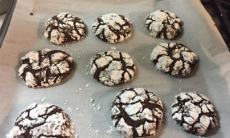

Chocolate Crinkles

Ingredients
- 1 cup unsweetened cocoa powder
- 2 cups granulated sugar
- 1/2 cup vegetable oil
- 4 eggs
- 2 teaspoons pure vanilla extract
- 2 cups of flour
- 2 teaspoons baking powder
- 1/2 teaspoon salt
- 1/2 cup powdered sugar
- parchment paper
Directions
- In a medium bowl, mix together the cocoa powder, sugar, and vegetable oil. Beat in eggs one at a time, then stir in the vanilla.
- In another bowl combine the flour, baking powder, and salt. Stir flour mixture into the cocoa mixture.
- Cover dough bowl with plastic wrap, put in refrigerator, and chill for at least 4 hours.
- Preheat oven to 350 degrees F (175 degrees C).
- Line cookie sheets with parchment paper.
- Roll the dough into one inch balls (a number 50 size scoop works). Coat each ball in powdered sugar before placing onto parchment-lined cookie sheets.
- Bake in preheated 350 degrees F oven for 10 to 12 minutes. Let the cooked cookies stand on the cookie sheet for at least 1 minute before transferring to wire racks to cool.
Chocolate Crinkles